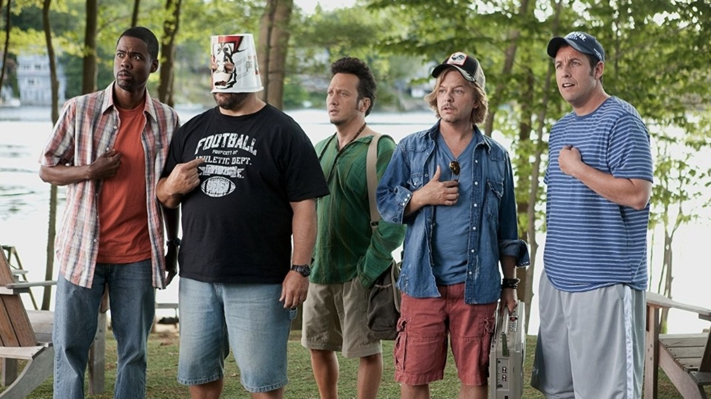
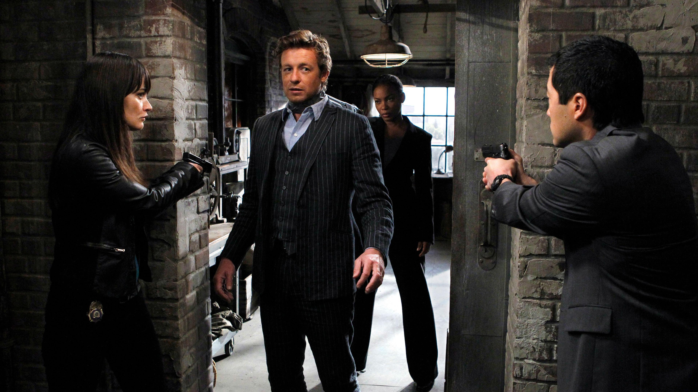
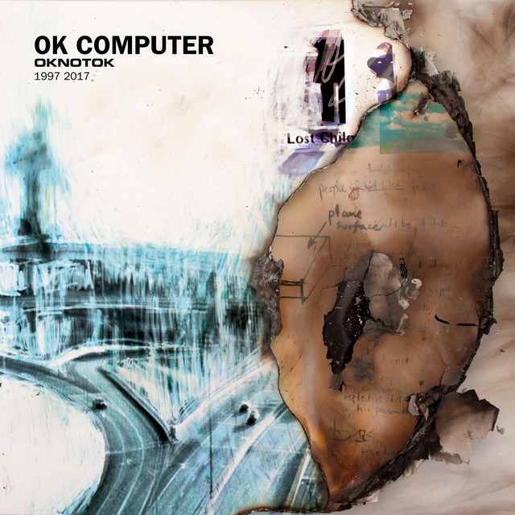
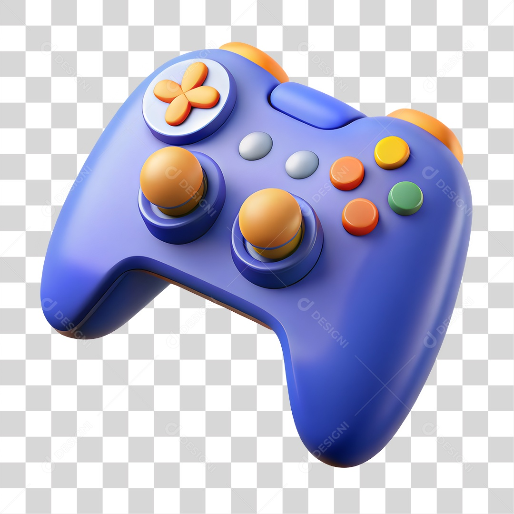

Feito por Tiago Miguel

Gosto de filmes de comédia como Gente Grande 1 e 2 e Se Beber, Não Case.

Eu gosto de séries com casos inteligentes e personagens carismáticos. O Mentalista e Suits mostram como usar a cabeça para resolver problemas, e Brooklyn Nine-Nine me faz rir muito.

Gosto de Somewhere Only We Know, Love Is Gone e Let Down.
Não escuto podcasts, mas se eu fosse escutar seria de games.

Gosto de jogos de simulação como Euro Truck Simulator 2 e Forza Horizon 6.
Gosto de procurar peças de computadores e acessórios como mouse e teclado.